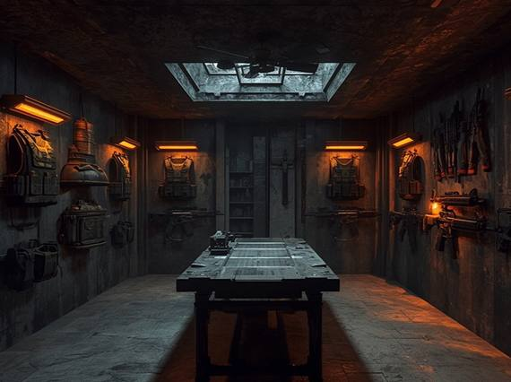

Історія клану
Для нас «переговори» — це ознака слабкості
Ми — елітна силова структура, утворена з наймогутніших кланів орків та племен важких печерних тролів. Там, де звичайні охоронці використовують камери та протоколи, ми використовуємо грубу, незворотну силу.
Наш підхід простий: жоден зловмисник не перетне периметр, якщо на його шляху стоїть триметровий троль у кевларовій броні.

Камера:Збройова REC •
LIVE База "Тартар"
- 0 Прорваних периметрів
- 10 000+ Зламаних кісток
- 100% Гарантія жорстокості